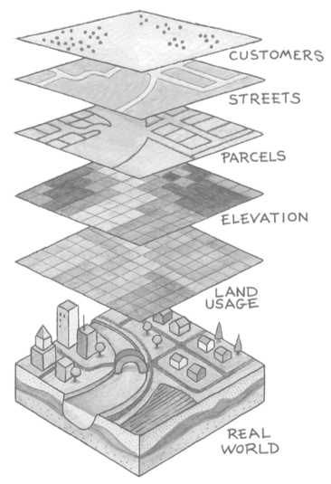
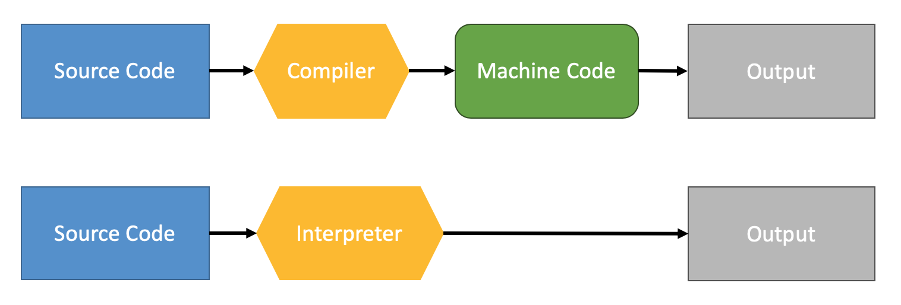

Advanced Geoscripting: Introduction to Scientific Computing¶
Heidelberg University | Institute of Geography | August 10th 2020
Christina Ludwig
- data-y
r1000
Agenda¶
Learning goals
Geography vs. GIS vs. Computer Science
Programming Languages
Practical: Assignment
Learning goals¶
Name Python packages for vector data processing and explain their dependencies.
Use context managers to read data in Python.
Use fiona, shapely and geopandas for vector data processing.
Measure and explain the difference in execution time between different vector data structures.
Summarize the advantages and disadvantages of compiled and interpreted languages.
Geography vs. Geo-Information Science vs. Computer Science¶
Build three groups:
Geographer (Breakout room 1)
Geo-Information Scientist (Breakout room 2)
Computer Scientist (Breakout room 3)
Discuss in groups:
What is the expertise of a geographer/GIScientist/computer scientist in regard to (spatial) data analysis?
{kind=link}
Geography - GIS - Computer Science¶
Quantitative Geography: Using GIS to learn about the world .
Geoinformatics: Studying geographic methods, data structures, etc.
Computer Science: Focusing on methods, data structures, etc.
Abstraction in Geographic Analyses¶
{kind=link}
Which data is necessary to model the problem or process?
Which geometric representation is suitable to model the problem or process?
{kind=link}
Interpretation vs. Compilation¶
{kind=link}
What are the differences between compilers and interpreters regarding the following aspects?
Execution time (fast - slow)
Degree of abstraction (natural language - machine language)
Typing (dynamic - static)
Memory management (manual - automatic)
{kind=link}
Questions?¶
Practical Part: Advanced Vector Data Analysis¶
The assignment has three parts:
Part 1: Introduction to vector data processing in Python
Part 2: Why all these packages?
Part 3: Vector Data Analysis using GeoPandas
Access and submission via GitHub Classroom (see course webpage).